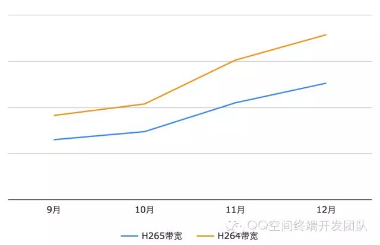

Qzone视频下载如何做到多快好省？
Qzone的日均视频播放量已经突破了10亿，其中Android端的播放量在总播放量中的占比超过70%，相比年初，播放量的增长了超过10倍。视频下载是整个视频播放的基础，如果下载侧出问题，则会造成整个视频播放的失败，这就对我们的视频下载提出了非常高的要求。
基于此，我们将视频下载总结为"多快好省"四个方面，以下载成功率、首次缓冲时长和缓冲概率为主要的技术指标对视频下载进行优化。具体参数的优化结果见下表1，经过长时间的打磨，我们的视频下载模块的下载成功率已经达到了99.9%，视频的首次缓冲时长1.2秒，二次缓冲概率低于1%，取得了良好的效果。下面我将从"多快好省"这四个方面，对我们主要的优化工作进行论述。
表1: 下载相关技术指标优化前后对比
| 技术指标 | 下载成功率 | 首次缓冲时长 | 缓冲概率 |
| 优化前 | 97.1% | 2s | 15% |
| 优化后 | 99.9% | 1.2s | 0.9％ |
1. 多
在10亿这个量级下，除了保证下载的成功率和下载速度这些主要参数之外，对于整个下载流程的监控、处理异常情况显得格外重要。为了提升视频的下载成功率、稳定性，监控整个下载流程，提升用户体验，我们采用本地代理的方式进行视频下载。
在Android手机上播放在线视频，最简单的方式就是实例化一个MediaPlayer, 将视频的URL通过setDataSource()设置给播放器，之后调用prepareAsync()和start()遍可以开始播放视频。这种方式非常简单，但其中最大的问题就是整个过程中的数据流完全由MediaPlayer控制，我们无法控制下载和播放的过程，也就导致我们没有办法提高成功率，优化用户体验。因此，Android侧的视频下载一般采用本地代理的方案实现。本地代理的方案即是指在播放视频的时候，将视频的URL转换为本地URL(127.0.0.1开头)，在播放器通过本地URL请求视频数据时，本地代理截获这次请求，在经过本地的处理逻辑后，向服务器或者本地缓存请求数据。本地代理在获得视频数据之后，将数据转发给播放器，具体的流程如下图1所示：
图1：本地代理数据流
相比起直接由播放器请求数据，本地代理的优势是数据流由本地代理控制，我们可以在本地代理中加入缓存、预加载、防盗链等业务逻辑，这可以极大的提升视频下载的成功率，减少视频的缓冲时间，从而提升用户体验。
传统的本地代理方案确实解决了播放器直连带来的问题，但同样也会产生一些问题，视频下载和播放的业务逻辑复杂，过多的逻辑和下载本身耦合，给开发的过程带来极大的不便，并且这样也不容易接入第三方的下载器和对下载过程进行监控。因此，在经历了两个版本的迭代之后，我们将整个下载过程进行重构。这次重构使得下载各模块的职责明确，便于开发、维护以及接入第三方的下载，也为我们后续的优化打下基础，重构之后的方案会在之后单独成文介绍。
2. 快
国外SmartBear的研究表明，57%的用户在3秒没有加载完网页时就会放弃。在视频播放上，加快视频的加载速度，减少播放过程中的卡顿，对提高用户观看视频的体验有极大的帮助。经过我们长期的优化，现在Qzone视频播放的接近秒开，缓冲概率下降到不到1%，这极大的提升了用户体验，也从侧面提升了我们的视频播放量。
在这数据提升的背后，我们主要做了几个方面的工作：
2.1：防盗链预拉取
盗链播放在国内非常普遍，而盗链会使平台资源流失，增加带宽成本，不利于平台的长期发展，国内大部分视频服务提供商都在一定程度上做了防盗链。防盗链的主要过程是后台下发的视频URL，在正式播放之前，需要通过URL中的部分参数，加上一些本地参数，向后台拉取真正播放的URL, 这些真正播放的URL都带有时效性，这种方式可以从一定程度上避免盗链行为。但通过防盗链接口拉取真实的播放URL需要时间，这也在一定程度上延长了用户感知的视频加载时间。针对这种情况，我们对防盗链的模块进行了改造，引入预拉取机制，将防盗链的拉取与播放解耦，对用户的播放行为进行预判，在用户播放视频的过程中提前拉取并缓存之后视频的URL, 从而减少了因为拉取防盗链URL造成的视频缓冲时间。
图2: 防盗链预拉取
2.2：数据预加载：
从MediapPlayer的源码可以发现（AwesomePlayer.cpp）, MediaPlayer需要下载5秒的数据才会开始播放视频，按照现在的外网平局下载速度计算，该过程的耗时在接近1秒，因此对于数据进行预加载是减少视频首次缓冲非常重要的方法。但视频数据的预加载不能跟当前播放的视频抢下载带宽，因此我们选择以当前播放视频的播放进度和数据缓存量为维度，当两者同时达到一个阀值时开始下载下一个视频的数据。在实践的过程中，我们还发现，因为一些编码格式的原因，MediaPlayer在播放视频之前可能会请求一部分尾部数据，因此，视频预加载还会加载一部分尾部数据，最大限度的保证预加载的效果。
2.3：缓存改造
MediaPlayer加载本地视频的效率远高于在线下载，因此，缓存的命中率会直接影响到视频缓冲的速度。最初的缓存方案是针对单个视频按照顺序缓存，这样实现简单，但存在的问题就是无法对于播放空洞（非顺序播放场景，例如拖动、续播等）进行缓存，这降低了视频的缓存率和缓存命中率，增加了带宽成本和视频的缓冲时长。之后我们针对缓存模块进行了改造，将顺序缓存改为分片缓存，即将单个视频的缓存按照一定大小进行分片，在遇到数据空洞或者缓存数据量达我们设置的单片缓存上限时，开启下一个分片缓存，确保可以缓存所有的下载数据。这样改造之后极大的提升了缓存命中率，降低了首次缓冲时间和二次缓冲的概率。
图3: 缓存改造
2.4：性能优化
梳理下载和播放过程中整体的流程，通过工具排查流程中长耗时的点和优化过程中的逻辑，减少不必要的耗时和操作，并将部分耗时逻辑移入子线程；优化时序，将例如图片加载、缓存IO等重逻辑执行的时机后移，以及对视频播放关联度不高的逻辑使用懒加载。这样可以降低对于视频播放，特别是视频缓冲过程中，CPU和IO的占用，使得系统能够调度更多的资源在解封装、解码、渲染等与播放、下载直接相关的操作上，进而减少这部分的耗时。
3. 好
下载的成功率是保证视频观看体验的基础，目前Qzone的视频下载成功率已经提升至99.9%，跟主要命令字的成功率相当。国内的移动网络环境错综复杂，不仅要处理断网、慢速、抖动等网络本身的题，还要处理跨网、运营商劫持等国情问题。下载成功率的提升过程非常艰难，我们在其中主要做了以下的工作：
3.1： IP直出与竞速
通过IP直出减少了DNS劫持的可能性；对于下层代理的视频下载下发多组IP，通过竞速计算本地最佳IP，使用最佳IP进行直出下载；上层代理对于下层代理的整个下载过程进行监控，在监测到下载速度缓慢或者异常情况时（IP连接失败、数据读取超时等）立即切换下载IP，减少用户的视频加载时间。通过IP直出、竞速和切换，提高了下载的连接、数据读取成功率，减少了因DNS劫持导致下载失败的概率，同时提高了下载速度。
3.2：对于链接失效（403）进行处理
上文（2.1章节）中提到Qzone视频播放的链接均是经过防盗链处理，带有播放效期的链接，这就使得，在实际播放的场景中，很可能出现用户希望播放某视频时，跟随后台下发的视频链接已经过期失效的情况，如果不进行处理，则会极大降低下载的成功率。针对这种情况，我们根据视频的不同来源，对于每种情况进行异化处理，通过向后台重新拉取链接或者本地计算Key，解决了因连接中的Key失效导致视频无法播放的问题。
3.3：下载命令字拉取接入私有通道
Qzone很早就开始采用维纳斯（WNS, Wireless Network Service）私有通道方案进行网络数据传输，相比使用最多的Http方案，WNS通过长连接、IP直出、接入点优化、数据压缩等方法，提高了网络连接的成功率和稳定性。为了提高主要命令字的拉取成功率，我们对原有用Http拉取命令字的方式进行改造，使用WNS通道包裹原来的Http数据包，在后台通过WNS通道收到原有的请求后再将请求分发至对应的后台，具体的流程如下图4所示。这样通过低成本的改造（不需要修改原有协议，后台直接透传基本没有开发工作量），借由WNS提升了整个通道的传输质量，进而也提高了视频的下载成功率。
图4：下载命令字拉取接入私有通道
3.4：下载速率动态调节
在移动网络下，发生网络抖动和网络切换经常发生，但网络不稳定，对下载来说是非常致命的。为了应对网络抖动和网络切换，下层代理会监听当前的网络变化，监控当前的下载速度。下层代理在下载数据时，为了减少对于别的业务影响，不会占用全部的带宽，但当发生频繁的网络切换时，下载代理会主动突破速度的限制，尽可能快的在网络情况良好时下载数据，给之后的播放留下足够的数据Buffer，保证整体播放的流畅性。
4. 省
互联网的视频服务提供商在国内盈利极其困难，除了近几年视频市场竞争越来越激烈，版权费居高不下之外，国内高昂的带宽成本也是重要原因。因此，如何在保证视频质量的前提下，尽可能减少下载流量，减少下载而产生的带宽成本，对于我们来说也是非常重要的工作。在这部分，我们主要的工作如下：
4.1: 流量控制
为了保证用户观看的流畅性，减少视频缓冲，视频数据下载的可播放量与当前观看的时间点之前会保持一定的Buffer，在整个播放过程中，通过动态调节下载速度，这个Buffer的大小基本保持不变，并且Buffer的大小可以动态调节。在流量高峰的时间段，我们会通过后台进行流量控制，减少Buffer，也就减少了高峰时段整体的下载量。带宽的计费标准一般按照高峰流量计费，减少了高峰时段的流量，也就降低了带宽成本。具体流控如下图，高峰时段视频缓冲M秒，非高峰时段缓冲N秒，N>M，两个参数均可由后台控制。
图5：流量控制
4.2: H265编码
H265是新一代视频编码标准，相比原有使用H264编码的视频，具有更高的压缩比，在画质近似的前提下，H265编码的视频文件体积只有H264的一半甚至更少，因此，播放H265编码的视频能极大减少带宽消耗。但H265现阶段主要存在的问题是终端编码耗时过长，后台编码过于消耗资源，以及在Android手机上，软解码（Android支持H265硬解码的机型较少，并且硬解码的兼容性问题相比软解更多）带来的耗电、发热以及兼容性问题。目前，Qzone通过自解码播放器，在经过大量的兼容性测试之后，已经在超过100款主流Android手机上实现了H265视频的软解播放。空间视频H265和H264编码的下载带宽对比以及之后的预期情况如下图6所示，可以明显看出，通过H265编码极大的降低了我们的视频下载带宽成本。

图6：空间视频H265和H264编码下载带宽比较
另外在2.3中论述对于视频缓存的分片改造，同时提升了下载数据缓存的使用率和命中率，也了减少了我们的视频下载带宽。
5. 总结
经过长时间的优化，Qzone视频业务，包括下载成功率、播放成功率、缓冲概率、首次缓冲时长等在内的主要技术指标，均得到了大幅度的提升，达到了我们的预期，也为Qzone视频点播和直播业务的持续发力铺平了道路。但技术优化是一个长期的过程，目前Qzone的视频播放已经开始启用自解码播放器，逐步替换原生的MediaPlayer，之后我们还会通过播放器多实例，编解码，参数调节等方式进一步提升视频下载成功率，压缩视频缓冲时间，减少缓冲概率。也欢迎各位多使用Qzone体验我们在各个场景中的视频播放，如果对体验或者技术优化的建议和意见，欢迎交流。
Qzone Android视频点播技术优化小分队：joltwang, michalliu, erainzhong, zakiwang,magilu.
同时感谢腾讯视频hualiangyan的长期支持。